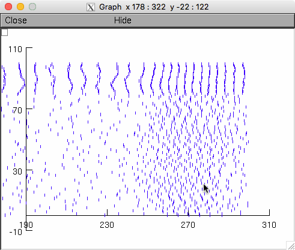

"Normal ripples, abnormal ripples, and fast ripples in a hippocampal
model" README file
========================================================================
This model creates the hippocampal model in:
Fink CG, Gliske S, Catoni N, and Stacey WC. "Network mechanisms
generating abnormal and normal hippocampal high-frequency
oscillations: A computational analysis." eNeuro 2015
DOI:10.1523/ENEURO.0024-15.2015
--
This code was contributed by Chris Fink.
This model is derived from earlier models published in:
Stacey WC, Krieger A, and Litt B. (2011) Network recruitment to
coherent oscillations in a hippocampal computer model.
Journal of Neurophysiology 105(4):1464-1481.
ModelDB Accession Number 135903
and
Stacey WC, Lazarewicz MT, and Litt B. Synaptic Noise and Physiological
Coupling Generate High Frequency Oscillations in a Hippocampal
Computational Model. Journal of neurophysiology 102: 2342-2357, 2009.
ModelDB Accession Number 135902
To run the simulation
---------------------
1. Should be run in the normal (serial) installation of NEURON 7.3.
Most of the code is actually written for parallel implementation, but
several functions were added that are not able to run in parallel.
2. Unzip the zip file, keeping the file structure intact (see below).
3. To compile the mod files, cd to the \mod file, and execute either
the command mknrndll (Windows) or nrnivmodl (Linux). Move the
resulting file (nrnmech in Windows, special in Linux) to the root
directory.
4. Run real2.hoc.
5. The model can generate simulated sharp waves (as in Figs. 4 and 5)
by periodically increasing the rate at which Poisson synaptic events
impinge upon model neurons. This is accomplished using a new mechanism
(not previously defined in the 2009 and 2011 papers listed above)
defined in the file noisesyn.mod.
Default parameters for this mechanism may be found in the file
noisysynapses.par. In particular, the parameter 'spikedur' determines
how many milliseconds the heightened synaptic noise intensity ("up"
state) lasts, before reverting to the low-intensity "down"
state.'spikefreq' determines the frequency (in Hz) at which these
cycles (of up state + down state) occur, so that the duration of the
down state (in ms) is given by 1000/spike_freq-spikedur.
When cells transition between states, they make their individual
transitions randomly, according to a Gaussian distribution with
standard deviation 'normalstd.' So the larger this parameter is, the
more spread-out transitions between up/down states will be.
The most important parameters for controlling this noisesyn mechanism
are found in the main file, real2.hoc. pyrspiketau_vec and
baskspiketau_vec contain values of mean inter-event intervals for
stimulating the pyramidal cells and basket cells, respectively. (Note
that smaller values therefore imply more intense stimulation.) Each
different combination ofthese parameters is run in a different
simulation (as can be seen in the process "series" defined at the end
of real2.hoc).
The parameters pyr_nospike_tau and bask_nospike_tau, defined in lines
123 and 125 of real2.hoc, determine the mean inter-event intervals of
stimulation in the "down" state.
In Figs. 4F-I, we set pyrspiketau_vec=0.1, pyr_nospike_tau=1.0, and
baskspike_tau=bask_nospike_tau=6.0.
The model is set to run with these by default and the activity of the
neurons looks like this (in the paper the panels were selected at time
intervals 100ms or so after the start) (see Raster plot below which
has similarities to fig 4G):

Note: change the length of time the simulation runs in externals.hoc
In Figs. 4A-D, we set pyrspiketau_vec=pyr_nospike_tau=1.0, and
baskspike_tau=0.60, and bask_nospike_tau=6.0. For both Figs. 4A-D and
4F-I, we set spikedur=35.0 in noisysynapses.par.
In Fig. 5, we set pyrspiketau_vec=0.1, pyr_nospike_tau=1.0, and
baskspike_tau=bask_nospike_tau=6.0, and scanned over values of
baskconnvector (defined in line 65 of real2.hoc) from 0 to 100,
counting by 10.
--
The one other major difference between this current model and its
earlier versions is that it incorporates "antenna cells," which are
pyramidal cells that receive only connections from basket cells, and
are not stimulated by external input. Their purpose is to amplify the
signal generated by IPSP's induced by basket cell firing. The number
of antenna cells can be set in the file manycells.par.
For other simulation details, please see the documentation
accompanying the earlier models (ModelDB accession numbers 135902 and
135903).
20170319 updates provided by Christian Fink mention the spikedur=35
fig 4 subpanel settings in noisysynapses.par in the readme
(above). Also the original settings in the model to 1e9 were
explained:
The old default parameters (pyr_nospike_tau=bask_nospike_tau=1e9)
represent the "simplest" down state, in which the network is not being
stimulated at all (the LFP will flatline at the end of simulations if
these parameters are set to 1e9).
Raster plot: (The below commands generated the far above raster plot)
A spkplt.hoc program Michael Hines included in (the Traub et al. 2005
NEURON version) ModelDB accession number 82894 is also included here
to create raster plots. Since it reads NEURON format vector dat files
it needs the total number of points as the first number in the
file. Create in linux/unix with commands by first finding the number
of points by using the word count program wc:
data $ wc *
8001 16002 172022 extra_b6.00_p0.100_g5.50_f0.dat
8001 16002 172022 extraactive_b6.00_p0.100_g5.50_f0.dat
8001 16002 172022 extraantenna_b6.00_p0.100_g5.50_f0.dat
13 18 217 parameters_b6.00_p0.10_g0_f5.dat
1 1 33 spikelog.dat
1452 3785 21663 spikes_b6.00_p0.10_g5.50_f0.dat
1 1 30 sumlog.dat
25470 51811 538009 total
data $ cat > spikes.dat
1452
data $ cat spikes_b6.00_p0.10_g5.50_f0.dat >> spikes.dat
data $ cd ..
data $ nrngui spkplt.hoc
...
oc>chdir("data")
oc>grspk=new Graph()
oc>spkplt("spikes.dat",3,1)
read 1452 spikes
oc>